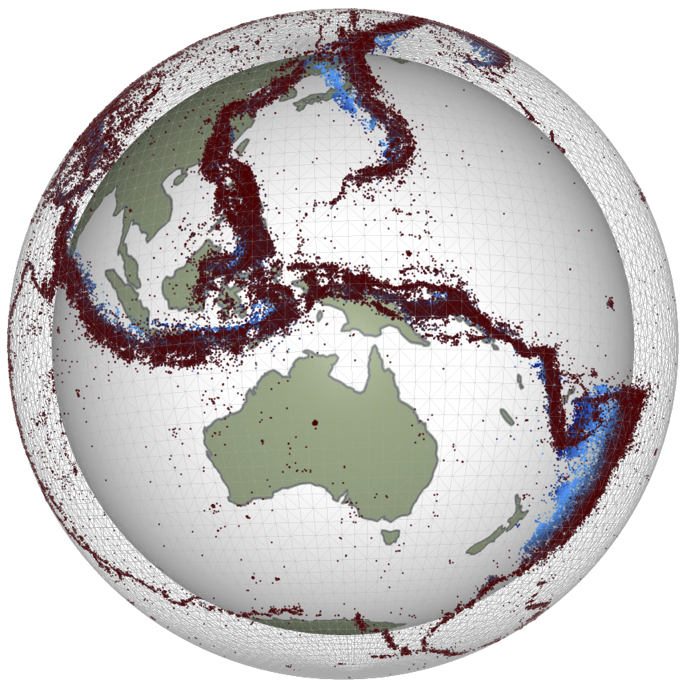

<!DOCTYPE html>
<html lang="en">
  <head>
    <meta charset="utf-8" />
    <meta name="viewport" content="width=device-width, initial-scale=1.0, maximum-scale=1.0, user-scalable=no" />

    <title>EMSC 3002 - Plate Tectonics</title>
    <link rel="shortcut icon" href="./favicon.ico"/>
    <link rel="stylesheet" href="./dist/reveal.css" />
    <link rel="stylesheet" href="_assets/css/anu.css" id="theme" />
    <link rel="stylesheet" href="./css/highlight/zenburn.css" />

  </head>
  <body>
    <div class="reveal">
      <div class="slides"><section  data-markdown><script type="text/template">

# EMSC 3002

### An Introduction to Structural Geology and Tectonics

  - **Louis Moresi** (convenor)
  - Romain Beucher (lecturer)
  - Chengxin Jiang (lecturer)
  - Stephen Cox (curriculum advisor)

Australian National University

_**NB:** the course materials provided by the authors are open source under a creative commons licence. 
We acknowledge the contribution of the community in providing other materials and we endeavour to 
provide the correct attribution and citation. Please contact louis.moresi@anu.edu.au for updates and 
corrections._

</script></section><section  data-markdown><script type="text/template">

## Resources

  <!-- .element style="float: right" width="25%" -->

<div  style="width:50%">

  [Online book](https://anu-rses-education.github.io/EMSC-3002/FrontPage.html)
with lecture materials, practicals and live computational examples.

  Wattle (when available), Programs and Courses  

  [Source code](https://github.com/underworld-geodynamics-cloud/self-managing-jupyterhub)
</div> 
</script></section><section  data-markdown><script type="text/template">

## Learning Outcomes

What you will learn about global tectonics.

 - one
 - two 
 - three

What you will not learn

 - Mantle convection / driving forces of plates
 - 


</script></section><section  data-markdown><script type="text/template">

## The Earth in Cross Section

 <!-- .element style="height:500px; float:right" -->

</br>

This image is drawn approximately to scale 

</script></section><section  data-markdown><script type="text/template">

## Image v2 

For full control on the image, including the ability to use `reveal.js` 
container sizing etc, you can use `html`



```html

```

That is all

</script></section><section  data-markdown><script type="text/template"> 

</script></section><section  data-markdown><script type="text/template">


## New Slide

With nothing much 

</script></section><section  data-markdown><script type="text/template">

## Image v3


 <!-- .element style="float: right" width="40%" -->


</script></section><section  data-markdown><script type="text/template">

</script></section></div>
    </div>

    <script src="./dist/reveal.js"></script>

    <script src="./plugin/markdown/markdown.js"></script>
    <script src="./plugin/highlight/highlight.js"></script>
    <script src="./plugin/zoom/zoom.js"></script>
    <script src="./plugin/notes/notes.js"></script>
    <script src="./plugin/math/math.js"></script>
    <script>
      function extend() {
        var target = {};
        for (var i = 0; i < arguments.length; i++) {
          var source = arguments[i];
          for (var key in source) {
            if (source.hasOwnProperty(key)) {
              target[key] = source[key];
            }
          }
        }
        return target;
      }

      // default options to init reveal.js
      var defaultOptions = {
        controls: true,
        progress: true,
        history: true,
        center: true,
        transition: 'default', // none/fade/slide/convex/concave/zoom
        plugins: [
          RevealMarkdown,
          RevealHighlight,
          RevealZoom,
          RevealNotes,
          RevealMath
        ]
      };

      // options from URL query string
      var queryOptions = Reveal().getQueryHash() || {};

      var options = extend(defaultOptions, {"slideNumber":true,"width":1100,"height":750,"margin":0.07}, queryOptions);
    </script>


    <script>
      Reveal.initialize(options);
    </script>
  </body>
</html>
